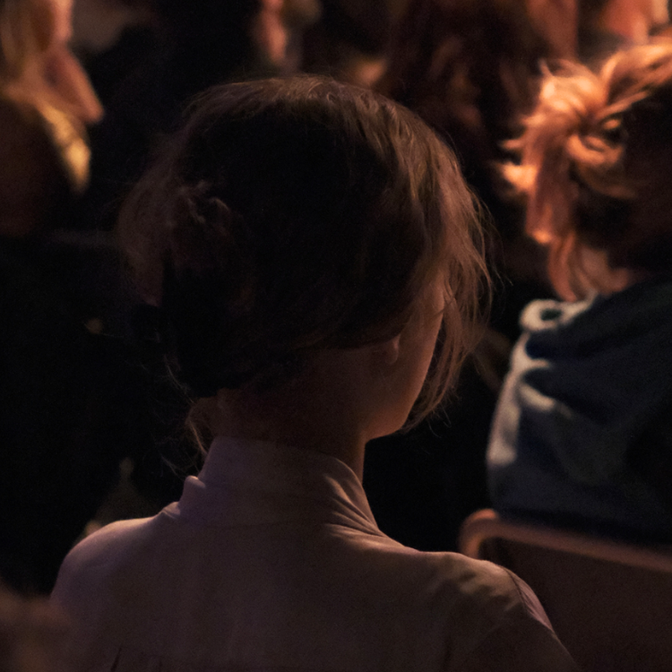

schrijf je in →
⌄
schrijf je in →
⌄
ruimte voor taal
ruimte voor experiment
ruimte voor ontmoeting
ruimte voor experiment
ruimte voor ontmoeting
*
Tussenwoorden creëert ruimte voor woord, poëzie en podiumkunst.

Voor wie schrijft.
Voor wie voordraagt.
Voor wie zoekt.
Voor wie luistert.
Tussenwoorden is een platform voor woord, poëzie en podiumkunst. We brengen schrijvers, performers en publiek samen rond de kracht van taal.
Via workshops, open podia, evenementen en de Vlaamse voorrondes van het NK Poetry Slam bieden we ruimte aan nieuwe en ervaren makers.
Naast live evenementen ontwikkelen we een digitaal platform waar teksten, audio, video en andere vormen van woordkunst een plaats krijgen buiten het boek of podium.
Een initiatief van Humus vzw.
“Ruimte voor nieuwe makers.
Ruimte voor ervaren stemmen.
Ruimte tussen woorden.”